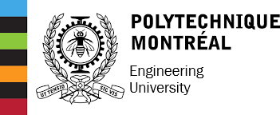

Frederic Perron

B.Sc. in Cybersecurity @ Polytechnique Montreal
🔠Personal Projects
- Keylogger Tool – Demonstrates keystroke logging for educational purposes
- Nmap GUI – Front-end for scanning with explanations
📠School Assignments
📫 Contact: fredericperron888@hotmail.com | LinkedIn